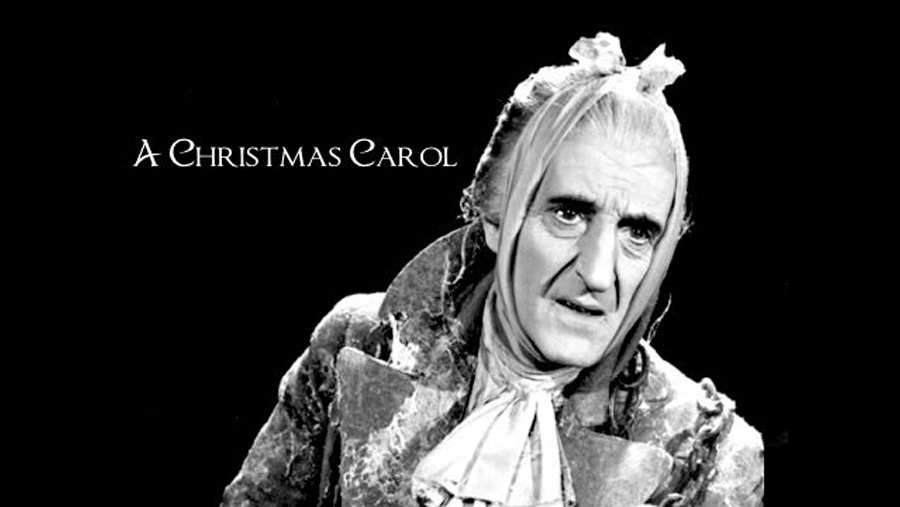

1954

CAST
Ebenezer Scrooge
-
Fredric March
Bob Cratchit
-
Bob Sweeney
Mrs. Cratchit
-
Queenie Leonard
Tiny Tim Cratchit
-
Christopher Cook
Fred (Scrooge's nephew)
-
Ray Middleton
Belle (Scrooge's sweetheart)
-
Sally Fraser
Martha Cratchit
-
Judy Franklin
Belinda Cratchit
-
Janine Perreau
Peter Cratchit
-
Peter Miles
Susan Cratchit
-
Bonnie Franklin
Marley's Ghost
-
Basil Rathbone
Spirit of Christmas Past
-
Sally Fraser
Spirit of Christmas Present
-
Ray Middleton
The Book Buyer
-
William Griffiths
Young Scrooge
-
Craig Hill
The Housekeeper
-
June Ellis
Fezziwig
-
Dick Elliott (uncredited)
Boy
-
Jimmy Baird (uncredited)
The Lamplighter
-
John Murphy (uncredited)
Solicitor
-
Rex Evans
Solicitor's Companion
-
Tony Pennington
Boy With Goose
-
John Meek (uncredited)
Woman
-
Ezelle Poule (uncredited)
CREATIVE TEAM
Director
-
Ralph Levy
Screenplay
-
Maxwell Anderson
Music
-
Bernard Herrmann
PRODUCTION
The production featured few songs, but those it did feature forced the adapters to severely condense the story, especially the final third. Rather than having a Ghost of Christmas Yet to Come, the adaptation featured a mynah bird, who leads Scrooge to a graveyard in which he sees not only his own grave, but that of Tiny Tim.
The script added an unusual twist to the story in having the Ghost of Christmas Past (Sally Fraser) and the Ghost of Christmas Present (Ray Middleton) be portrayed by the same actors who played Scrooge's sweetheart Belle and his nephew Fred, respectively, and Scrooge not only notices the resemblance, but mistakes the Ghost of Christmas Present for his nephew.